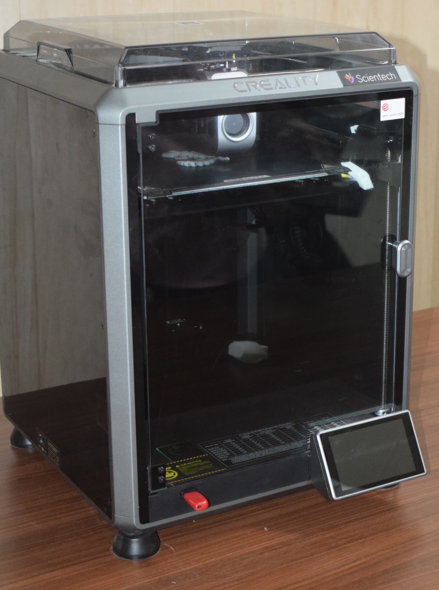

Overview
अवलोकन
جائزہ
The Creality K1 is a groundbreaking 3D printer engineered for unmatched speed and quality. With blazing fast performance, high precision, and intelligent features, it is ideal for hobbyists, professionals, and educators alike.
क्रिएलिटी K1 एक अभूतपूर्व 3D प्रिंटर है जो बेजोड़ गति और गुणवत्ता के लिए इंजीनियर किया गया है। तेज़ प्रदर्शन, उच्च सटीकता और बुद्धिमान सुविधाओं के साथ, यह शौकीनों, पेशेवरों और शिक्षकों के लिए आदर्श है।
کریالٹی K1 ایک انقلابی 3D پرنٹر ہے جو بے مثال رفتار اور معیار کے لیے ڈیزائن کیا گیا ہے۔ تیز رفتار کارکردگی، اعلیٰ درستگی، اور ذہین خصوصیات کے ساتھ، یہ شوقین، پیشہ ور اور تعلیمی ماہرین کے لیے مثالی ہے۔
Speed Performance
गति प्रदर्शन
رفتار کی کارکردگی
- Print speed up to 600mm/s
- Acceleration up to 20000mm/s²
- CoreXY motion system for enhanced stability
- Reaches 90% of target speed in just 0.03 seconds
- 600mm/s तक की प्रिंट गति
- 20000mm/s² तक का त्वरण
- बेहतर स्थिरता के लिए CoreXY मोशन सिस्टम
- केवल 0.03 सेकंड में लक्ष्य गति का 90% प्राप्त करता है
- 600mm/s تک پرنٹ کی رفتار
- 20000mm/s² تک کی رفتار
- بہتر استحکام کے لیے CoreXY موشن سسٹم
- صرف 0.03 سیکنڈ میں ہدف کی رفتار کا 90% حاصل کرتا ہے
Precision and Print Quality
सटीकता और प्रिंट गुणवत्ता
درستگی اور پرنٹ کوالٹی
- Advanced Input Shaping reduces vibration
- G-sensor compensation adjusts for resonance
- Maintains accuracy even at top speeds
- उन्नत इनपुट शेपिंग कंपन को कम करता है
- G-सेंसर क्षतिपूर्ति गूंज के लिए समायोजित करती है
- शीर्ष गति पर भी सटीकता बनाए रखता है
- جدید انپٹ شیپنگ کمپن کو کم کرتا ہے
- G-سینسر کمپنسیشن گونج کے لیے ایڈجسٹ کرتا ہے
- تیز رفتار پر بھی درستگی برقرار رکھتا ہے
Smart & Intelligent Features
स्मार्ट और बुद्धिमान सुविधाएं
اسمارٹ اور ذہین خصوصیات
- AI camera for monitoring and time-lapse
- AI LiDAR scans first layer for accuracy
- One-tap self-testing diagnostics
- निगरानी और टाइम-लैप्स के लिए AI कैमरा
- सटीकता के लिए AI LiDAR पहली परत को स्कैन करता है
- वन-टैप सेल्फ-टेस्टिंग डायग्नोस्टिक्स
- نگرانی اور ٹائم لیپس کے لیے AI کیمرہ
- درستگی کے لیے AI LiDAR پہلی تہ کو اسکین کرتا ہے
- ون ٹیپ سیلف ٹیسٹنگ ڈائیگنوسٹکس
User-Friendly Design
उपयोगकर्ता-अनुकूल डिज़ाइन
صارف دوست ڈیزائن
- Ready to use out of the box
- Enclosed chamber for consistent temps
- 4.3-inch touchscreen for intuitive control
- बॉक्स से बाहर निकालकर तुरंत उपयोग के लिए तैयार
- स्थिर तापमान के लिए बंद चैंबर
- सहज नियंत्रण के लिए 4.3-इंच टचस्क्रीन
- ڈبے سے نکالتے ہی استعمال کے لیے تیار
- مستحکم درجہ حرارت کے لیے بند چیمبر
- آسان کنٹرول کے لیے 4.3 انچ ٹچ اسکرین
Material Compatibility
सामग्री संगतता
مواد کی مطابقت
- Supports PLA, PETG, ABS, TPU, PA, ASA
- High-flow hotend ensures consistent extrusion
- Optimized cooling for material diversity
- PLA, PETG, ABS, TPU, PA, ASA का समर्थन करता है
- हाई-फ्लो हॉटएंड निरंतर एक्सट्रूजन सुनिश्चित करता है
- सामग्री विविधता के लिए अनुकूलित कूलिंग
- PLA, PETG, ABS, TPU, PA, ASA کو سپورٹ کرتا ہے
- ہائی فلو ہاٹ اینڈ مستحکم ایکسٹروژن کو یقینی بناتا ہے
- مواد کی تنوع کے لیے بہتر کولنگ
Who Should Use It?
इसका उपयोग कौन करे?
اسے کون استعمال کرے؟
- Hobbyists: Great for custom projects
- Designers: Rapid prototyping capability
- Engineers: Functional part development
- Educators: Perfect for classroom demos
- शौकीन: कस्टम प्रोजेक्ट्स के लिए बेहतरीन
- डिज़ाइनर: तेज़ प्रोटोटाइपिंग क्षमता
- इंजीनियर: कार्यात्मक भाग विकास
- शिक्षक: कक्षा प्रदर्शन के लिए परफेक्ट
- شوقین: کسٹم پروجیکٹس کے لیے بہترین
- ڈیزائنرز: تیز پروٹوٹائپنگ صلاحیت
- انجینئرز: فنکشنل پارٹ ڈیولپمنٹ
- اساتذہ: کلاس روم ڈیمو کے لیے بہترین
Key Takeaways
मुख्य बातें
اہم نکات
- ⚡ Speed
- 🎯 Precision
- 🧠 Intelligence
- 👍 Usability
- ⚡ गति
- 🎯 सटीकता
- 🧠 बुद्धिमत्ता
- 👍 उपयोगिता
- ⚡ رفتار
- 🎯 درستگی
- 🧠 ذہانت
- 👍 استعمال میں آسانی